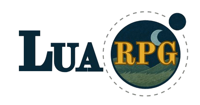

Web Design
Modern and high-quality visual systems with attention to spacing, typography, and interaction detail.
I'm a developer who enjoys building useful products with strong UI clarity and reliable engineering under the hood. My focus is turning ideas into interfaces that feel simple, fast, and modern.
I work across design-minded frontend development, reusable components, and maintainable project structure so each release is easier to improve over time.
Modern and high-quality visual systems with attention to spacing, typography, and interaction detail.
Production-ready websites with clean structure, responsive layout, and accessible user experience.
Interfaces that translate smoothly from desktop to mobile without losing clarity or usability.
Clear case studies that explain problem, process, stack, and measurable outcomes from each project.
Keep your original DOCX and also export a PDF for better in-browser viewing.
Place your files as resume.docx and resume.pdf in this project root.
Steam-style showcase pages grouped into personal and academic projects.

Personal Project • Action/Adventure • PC
Write a short game pitch here. Explain what the game is, who it is for, and what makes it unique in 2-3 lines.
Explain the gameplay loop briefly, then show one video clip focused on player actions and feedback.
Add another short paragraph for progression systems, enemy AI, or difficulty scaling, then attach the second clip.
Show your final visual quality pass: VFX, UI polish, audio, and feel improvements.
Academic Project • Course Requirement
Use this section for your school project. Summarize the project objective, scope, and expected outcome.
Add one short explanatory paragraph and your main demo video.